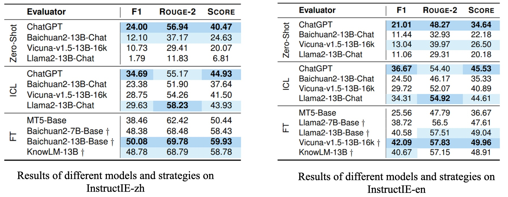

Traditional information extraction (IE) methodologies, constrained by pre-defined classes and static training paradigms, often falter in adaptability, especially in the dynamic world. To bridge this gap, we attempt to adopt an Instruction-based IE paradigm in this paper. Yet, we observe that most existing IE datasets tend to be overly redundant in their label sets, leading to instructions often involving numerous labels not directly relevant to the extraction content. To tackle this issue, we introduce a bilingual theme-centric IE instruction dataset, InstructIE, and for the first time, incorporate the design of a theme scheme, effectively simplifying the label structure. Furthermore, we develop an innovative framework named KG2Instruction, specifically designed for the automatic generation of such datasets. Experimental evaluations based on InstructIE reveal that while current models already show promise in Instruction-based IE tasks, opportunities for their potential optimization also emerge.
Comparison of traditional approaches with Instruction-based IE in handling emergent classes (unseen during training).
Our experimental design seeks to systematically investigate the efficacy and applicability of diverse methodologies within the realm of Instruction-based IE. Central to this inquiry are several strategies: (1) Zero-shot learning, (2) In-context learning, (3) Fine-tuning (including QLora).
We utilize a blend of span-based micro-F1 and the rouge-2 score, expressed as Score = 0.5 × F1 + 0.5 × rouge-2.

@article{DBLP:journals/corr/abs-2305-11527,
author = {Honghao Gui and
Jintian Zhang and
Hongbin Ye and
Ningyu Zhang},
title = {InstructIE: {A} Chinese Instruction-based Information Extraction Dataset},
journal = {CoRR},
volume = {abs/2305.11527},
year = {2023},
url = {https://doi.org/10.48550/arXiv.2305.11527},
doi = {10.48550/arXiv.2305.11527},
eprinttype = {arXiv},
eprint = {2305.11527},
timestamp = {Thu, 25 May 2023 15:41:47 +0200},
biburl = {https://dblp.org/rec/journals/corr/abs-2305-11527.bib},
bibsource = {dblp computer science bibliography, https://dblp.org}
}
This website is adapted from Nerfies, licensed under a Creative Commons Attribution-ShareAlike 4.0 International License.